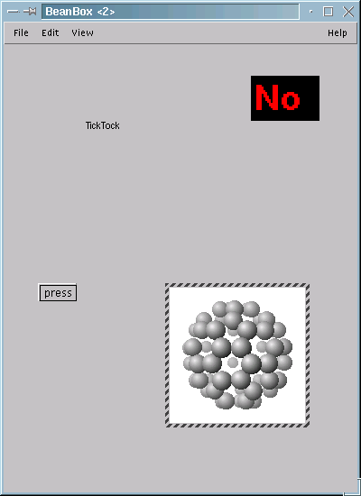
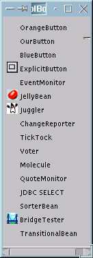
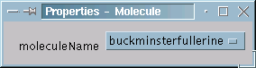
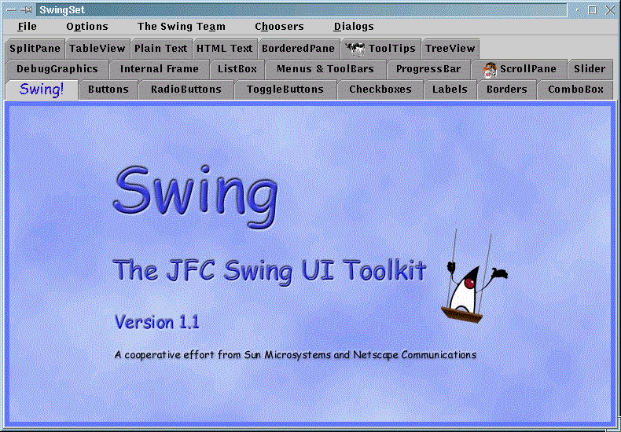
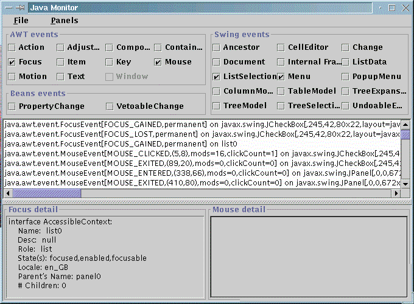
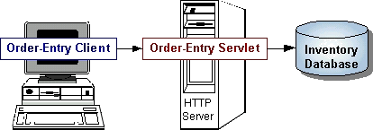

![[ TABLE OF CONTENTS ]](../../gx/indexnew.gif)
![[ FRONT PAGE ]](../../gx/homenew.gif)


This article is intended to help those new to either Linux or Java set their machines up to run Java applications, as well as providing an effective environment for developing new Java applications.
Specifically I shall explain how to set up Sun's 1.1.x JDK and other related packages. This is not the only way to run Java on Linux.
Blackdown.org now offers the new 1.2.x JDK for Linux (at the time of writting this is still a pre-release version). I only recommend using this if you are also using the new 2.2.x Linux kernel. If you choose to install the 1.2.x JDK then please note that you do not need to obtain the Swing and JSDK packages, since they are already included. Also you may find some compatibility problems if you use older Java applications with the 1.2.x JDK. In particular if you intend to implement the javapache extensions to Apache you will need to use JDK 1.1.x.
In addition there exist other third party Java environments and Java compilers such as IBM's jikes. Use these at your own peril! IMHO Sun have defined and developed the Java language so I expect their Java environments to be the most standard. Other environments may be of interest, but I cannot cover them here.
Unfortunately the development of the Java language for Linux lags the development for other operating systems. Having said that there are still many advantages to using Java on Linux, not least of which is the easy availability of sophisticated development tools. If you have not seen a recent version of DDD (The Dynamic Display De-bugger), you may not realise that it now supports Java. If you write any programs under Linux DDD is a must have utility.
Why use Java at all?
Java's greatest advantage is also its greatest disadvantage. For reasons given below, the fact that the same Java code can be run on any platform without re-compiling is responsible for the fact that Java applications can appear slow. It is this slowness that has lead some to question the need to use Java at all.
It is true that if speed in loading and running an application is the only criteria for choosing a programming language then I would never consider using Java at all. Although applications such as jedit and the Java cd player described in earlier editions of this e-zine are functionaly equivalent to applications written in C they are very slow to start up and I am loath to use them when I have much faster alternatives.
But Java is not meant for such applications. Java excells in what it was originally designed for, which is to provide a means of making applications available over the Internet. Over the Internet the speed of loading an application is not really important when compared to the time it takes to download the application.
Now consider your friendly ISP, and the servers that provide you with Internet access. Your ISP (even your local Intranet) needs the fastest machines possible given certain criteria (cost etc). The cost of the actual server may not be important when compared to the software investment of server-side applications. Using Java to implement server-side applications leaves your ISP free to choose the best machine architecture and operating system without having to worry about the cost and feasibility of re-implementing such applications. They can simply be copied from one machine to another. Perhaps one day Microsoft will develop a reliable operating system that is superior to a *NIX operating system. If that day ever comes I will want to change from Linux, using Java will allow me to do that and keep exactly the same server-side applications I am running now.
If you only want to use a stand-alone computer, with no network access, either locally or over the Internet, then you probably do not need or want to consider using Java. But if your machine is going to be part of a local network or the Internet then the use of Java should be taken very seriously. Java is not the only way to develop network applications. For instance Perl can be used in a very similar way. But Java is a very attractive option.
Please do not obtain your JDK directly from Sun. They provide support only for Microsoft Windows, Solaris etc. Instead go to Blackdown.org and find the version you require.
All other packages mentioned here should be obtained from Sun.
The Linux port of the JDK can either be found on a Linux distribution disk, or can be found at http://blackdown.org. You will find you have a bewildering choice of files to install. There is the JRE as well as the JDK. I recommend you get the full JDK package since it contains everything in the others.
Linux was possibly the first operating system to provide direct kernel support for Java. This allows Linux to run both Java applications and Java applets directly, without the need for a browser such as Netscape. But if you think direct kernel support means that the kernel has anything to do with actually running Java code you are sadly mistaken.
To understand what is happening you need to realize that Java is really only one step removed from running interpreted programs rather than compiled programs. In the early days of computing, it was common to use an interpreted language, such as GW-BASIC, to write simple applications. The code that was written was never compiled into a program, rather the code would be parsed by an interpreter which would perform the actual execution of instructions. This is a very inefficient way of doing things and the results will always be slow.
Java differs from an interpreted language, such as early versions of BASIC, in that the source code is compiled. But the source is not compiled into something a computer can directly execute as would be the case if you compiled a C program with gcc. Instead the source code is byte-compiled into a standard format. The reason that the same Java application can be run on any platform is precisely because this byte-code is in a standard format. The programs java and appletviewer, provided by Sun or Blackdown.org perform the function of parsing this byte-code and executing the instructions. This is the reason Java applications can appear slow, the byte-code must be parsed by an interpreter before it can be executed, though the situation is not nearly as bad as it was with early BASIC programs, since the byte-code has already been optimized by the java compiler.
When you compile Java support into the Linux kernel what you are really doing is telling the operating system to invoke either java or appletviewer when a request is made to execute a java application. Linux is simply giving you a shorthand way of saying 'appletviewer myapplication'.
For this reason you need to tell the kernel where your Java executables are kept. If you obtain the JDK from Blackdown.org then the chances are that java and appletviewer will be placed in /usr/local/java/bin. If you install the JDK from a S.u.S.E. distribution disk then they will be in /usr/lib/java/bin. Of course you might have installed the JDK to some non-standard location.
Before you re-compile your Linux kernel, edit the file /usr/src/linux/fs/binfmt_java.c to reflect the situation you actually have.
#include <linux/malloc.h>
#include <linux/binfmts.h>
#define _PATH_JAVA "/usr/local/java/bin/java" // Replace with correct location for your system.
#define _PATH_APPLET "/usr/local/java/bin/appletviewer" // Replace with correct location for your system.
#define _PATH_SH "/bin/bash"
char binfmt_java_interpreter[65] = _PATH_JAVA;
char binfmt_java_appletviewer[65] = _PATH_APPLET;
Please note that the references to java and appletviewer should be to the actual location of the binaries and not to any symbolic link you might have created. In the example above the directory /usr/local/java might be a symbolic link to /usr/lib/java-1.1.7, but the actual file refereed to is not a symbolic link, it actually exists in /usr/lib/java-1.1.7/bin.
Now you can decide if you want to compile Java support directly into the kernel, or have it as a module. I choose to use a module. The only comment I feel necessary is that when I try to execute a html file kernld will not automatically load the binfmt_java module, so I must "insmod binfmt_java" first.
Execute a HTML file?
Yes, Linux will allow you to execute certain HTML files as though they are applications. To understand why you would want to do this you need to understand the difference between a Java applet and a full blown Java application. Whilst a Java application provides all the resources it needs itself, an applet does not. Normally an applet needs to be included in a web page which is viewed by a Java enabled browser such as Netscape or HotJava because it has no top level window of its own. An alternative is to use the appletviewer program to view the applet.
Linux gives you a further option. if you add the line
<!--applet-->
to a HTML file (and '<' must be the first character in the file), and chmod the file to be executable, then you will be able to launch the applet(s) embedded in the file directly.
In a similar manner a Java application is made up of one or more class files. To make the application executable by linux simply chmod the top level class file so it is executable.
Reading the documentation that comes with the JDK, we find that there is no need to set the CLASSPATH or JDK_HOME environments. Whilst this is true for the JDK itself, I have found that there are some applications that expect these environments to be set. In any case setting them will not cause you any harm and I recommend you take the following steps to install the JDK correctly:
Where {JDK_HOME} is the top-level directory to which you installed the JDK.
The JavaBeans API allows you to create component software in the Java programming language. Components are complete, self-contained, reusable software items that can be visually linked into any Java program, applet or servlet. Such software items are refereed to as Beans. Many Java IDE's are available, such as NetBeans or Visarj, that use this technology to provide application builder tools. Included in the package is BeanBox, a simple JavaBean IDE to get you started.
When you startup BeanBox, by running bin.sh in the BDK/beanbox sub-directory, three windows will open for you:
The BeanBox window

A ToolBox window

A Properties window

The ToolBox initially contains a number of example beans, you can add your own to create your own visual programming environment. Select a bean by clicking your mouse on it. Then click somewhere in the BeanBox. The javaBean will appear and a list of its properties will appear in the Properties window. You may then use the Properties window to customize the JavaBean for your application. When you have finished adding Beans, and are happy with the appearance of your application in the BeanBox you can select File/Make applet from the BeanBox windows menu and an applet complete with example html file will be generated for you.
As should now be clear, JavaBeans provide a means to develop applications without writing a single line of code. Of course you need to write the Beans themselves but many third party vendors make Beans available and the Internet is a fine place to look for new components.
A feature of JavaBeans is that they are packed into the JAR file format. This format has many advantages over java class files including:
File Compression A JAR file may optionally be compressed for more efficient storage and faster download times.
Decreased Download Times An entire applet may be bundled into a single JAR file. This means a users browser only needs to open a single connection to download your applet rather than a connection for each class file your applet requires.
Security A JAR file can be digitally signed. This gives users the opportunity to grant your software security privileges it would not normally have, so long as the user is able to recognize your signature.
Additional features are included in JDK 1.2.x including package versioning, package sealing and packaging for extensions.
INSTALLATION
Not all Java applications are equal! Some look better than others. Swing provides several enhancements to the Java language. Whilst you do not need Swing to develop and run Java applications and applets, you may well need it to compile or run certain Java applications (such as jedit) that are freely available on the Internet.

The Java Foundation Classes (JFC, this is included in the Swing package), together with Swing, provide a set of "lightweight" components that work the same on all platforms. Effectively they provide GUI extensions to the Java language that can provide many enhancements to the look and feel of your applications.
The screen-shot above shows the initial screen when you start the swingset application. This can be used to demonstrate the enhancements Swing provides. by selecting a category such as ListBox you will be able to display and alter the various options that are available and so become familiar with the effects that Swing can provide.
An application I can recommend that makes full use of Swing is jedit, a very nice editor. This is available in full source code, and is suitable for editing plain text files such as HTML, Java source, Perl scripts, LaTeX documents, etc. The editor supports the inclusion of plug-ins and a couple of trivial examples are included to get you started.
INSTALLATION
Where {SWING_HOME} is the directory under which you unpacked Swing.
Actually, there are two packages here: The Java Accessibility API and the Java Accessibility Utilities themselves.
The Java Accessibility API defines a contract between individual user-interface components that make up a Java application and an assistive technology that is providing access to that Java application. If a Java application fully supports the Java Accessibility API, then it should be compatible with, and friendly toward, assistive technologies such as screen readers, screen magnifiers, etc. With a Java application that fully supports the Java Accessibility API, no off screen model would be necessary because the API provides all of the information normally contained in an off screen model.
In order to provide access to a Java application, an assistive technology requires more than the Java Accessibility API: it also requires support in locating the objects that implement the API as well as support for being loaded into the Java virtual machine, tracking events, etc. The Java Accessibility utility classes provide this assistance.

As you may have guessed from the screen-shot above, the Java Accessibility Utilities require that you have installed the Swing package.
Several example utilities are provided in the package. The screen-shot above shows the Java Monitor which allows you to obtain information about objects being displayed on the screen by a Java Virtual Machine. Also included are:
AWT Monitor This is the same as the Java Monitor but does not require or support the Java Foundation Classes.
Explorer Explorer uses the Java Accessibility Utilities to examine accessible information about the objects in the Java Virtual Machine. It allows the user to select different methods for selecting the object to be examined: by following focus, by following the mouse, by following caret position, or by pressing the F1 when the pointer is over an object. Once an object has been selected for examination, Explorer displays the results of calling Java Accessibility API methods on that object.
Monkey Like a monkey, Monkey "swings" through the component trees in a particular Java Virtual Machine and presents the hierarchy in two different ways. The first is the actual Component hierarchy and the second is the hierarchy viewed as Accessible objects. In addition, if the user clicks the right mouse button over a tree node in Monkey, Monkey will present the user with a pop-up menu containing options for manipulating the object.
Accessibility Monitor Accessibility Monitor will monitor all accessible property change events on all of the non-transient objects in the virtual machine. In addition, if the user clicks the right mouse over the events presented in the table provided by AccessibilityMonitor, AccessibilityMonitor will present the user with a pop-up menu containing options for manipulating the associated object.
Linker Linker captures the Accessible hypertext information contained in the object underneath the mouse (the user the presses the F1 key), and displays a list of the the Accessible hyperlinks within that object in a table. Selecting one of the links and clicking "Activate Selected Link" will cause the hypertext object to follow the link selected (to update the display, move the mouse over the object and press F1 again).
INSTALLATION
This is a little different to the other packages mentioned here, since the different utilities included have to be explicitly enabled by you.
When you start any Java application you will also be able to automatically stat one of the utilities mentioned above by following the steps below:
AWT.EventQueueClass=com.sun.java.accessibility.util.EventQueueMonitor
AWT.assistive_technologies=JavaMonitor
The Java Servlet API is a standard extension to the Java Development Kit. Servlet's are bodies of code that run inside servers to extend their functionality. For example, servlet's offer an efficient platform-independent replacement for CGI scripts. Servers that can host servlet's are java-enabled servers that respond to client requests.

The diagram above shows a typical use of a Java servlet. A HTTP server is running a servlet that is responsible for taking data from a HTML order-entry form and applies a companies rules for updating their order database. Simply put, a java servlet is a servers version of a java applet. As one might expect, since the server will be running remotely and unattended (from a users viewpoint at least) servlet's have no graphical user interface.
Servlet's provide a way to generate dynamic documents that is both easier to write and faster to run. Servlet's also address the problem of doing server-side programming with platform-specific APIs: they are developed with the Java Servlet API, a standard Java extension.
So use servlet's to handle HTTP client requests. For example, have servlet's process data POSTed over HTTP using an HTML form, including purchase order or credit card data. A servlet like this could be part of an order-entry and processing system, working with product and inventory databases, and perhaps an on-line payment system.
Amongst the many other possible uses for servlet's are the following:
Allowing collaboration between people. A servlet can handle multiple requests concurrently, and can synchronize requests. This allows servlet's to support systems such as on-line conferencing.
Forwarding requests. Servlet's can forward requests to other servers and servlet's. Thus servlet's can be used to balance load among several servers that mirror the same content, and to partition a single logical service over several servers, according to task type or organizational boundaries.
If you use Apache then you will be interested in the javapache project, available from http://java.apache.org. To use this you will need to use the 1.1x JDK, and must use version 2.0 of the JSDK. Next month I hope to make an introduction to this project available.
The JSDK is available for download from http://java.sun.com/products/java-server/servlets
If you are using the newer 1.2.x JDK please remember you do not need to download this package, since the JSDK is already included.
INSTALLATION
export PATH=$PATH:/usr/lib/JSDK/binto your /etc/profile file.
Add the JSDK Classes to your CLASSPATH, e.g.
export CLASSPATH=$CLASSPATH:/usr/lib/JSDK/lib/jsdk.jar
Again you can add this line to your /etc/profile file.
Each package includes its own documentation in HTML format. However, since you need to get your JDK from Blackdown.org, rather than from Sun, the documentation for the JDK will be missing from the package.
Sun provides full documentation for both 1.1.x and 1.2.x versions of the JDK. Documentation for the 1.1.x version exists for version 1.1.3. I do not think it has been updated since then.
In the demo sub-directory you will find many examples. Find the HTML files that launch java applets and make them executable in the manner I have described above so you can run them as conventional programs.
The docs subdirectory contains a complete programmers guide to the Java language. This is further enhanced by the Java Tutorial.
Sun have a comprehensive Java tutorial which can get you up to speed programming in Java very quickly. Both the entire tutorial and specific parts of it are available for download:
|
Bundle |
Format |
Compressed / |
Link to Download |
|---|---|---|---|
|
Online Tutorial |
Zip |
8.5 MB / 14.7 MB |
|
|
tar/compress |
10.5 MB / 14.7 MB |
||
|
tar/GNUzip |
7.2 MB / 14.7 MB |
||
|
Tutorial Examples |
Zip |
2.9 MB / 4.4 MB |
|
|
tar/compress |
3.6 MB / 4.4 MB |
||
|
tar/GNUzip |
2.5 MB / 4.4 MB |
||
|
JFC/Swing Trail |
Zip |
2.8 MB / 4.6 MB |
|
|
Servlets Bookstore Example
|
Zip |
18 KB / 51 KB |
|
|
BINGO Example |
Zip |
35 KB / 108 KB |
Alternatively you can read the tutorial on-line at http://java.sun.com/docs/books/tutorial.
Please note: Whilst you are free to mirror this tutorial on a local network or Intranet, Sun request that you do not make it available publicly on the Internet.
This is a web browser written entirely in Java. For that reason even on a 133Mhz pentium class processor it is very slow. Its advantage is that it is one of the very few browsers available for Linux that can run Java applets. It is also very interesting for other reasons.
HotJava is highly modular, the user interface is easily customizable and has a small footprint (does not take up a large amount of system resources). Well that is what Sun claims. I find in practice that if I try loading java applets whilst running other applications the browser will die on me. I would have thought that if it does have a small footprint this would not happen - whatever.
Sun further claim that the browser is ideal for a variety of devices - such as screen phones as well as desktop PC's. All I can say is that until the browser can perform faster (on my pentium class box with 32Meg ram it takes about three minuets to start up and load the default screen), and is more reliable, then it is unlikely to be of much use unless you have a very fast processor.
The heart of HotJava is the HotJava HTML Component. This is a JavaBean that parses and renders HTML. This can be embedded into your own applications, anything from a newsreader to a microwave oven (yes there are microwaves and even fridges that give you Internet access now), can make use of it to display information.
HotJava supports the following Internet standards:-
JDK 1.1
HTTP 1.1 Protocol
HTML 3.2
Tables and Frames
FTP and Gopher File Transfer Protocols
Persistent Cookies
GIF and JPEG Media Formats
AU audio format
SMTP and MIME E-mail Protocols
SOCKS Protocol
SSL 3.0
Java Archive (jar) Format
The following packages are available depending on your needs:
HotJava Browser Source Code (including HotJava HTML Component)
HotJava Browser Binary
HotJava HTML Component Source Code
HotJava HTML Component Binary
Last month I explained how to set up the Apache HTTP server. Next month I intend to tie these two articles together by showing you how to incorporate the javapache extensions to Apache so you can use Java to create dynamic HTML pages and server side applications to enhance your web site.
In a future article I shall give an overview of the available Netscape Plug-ins and show how simple it is to develop your own plug-ins. In the meantime I welcome your comments and suggestions for future articles.
Editor's note: October's Linux Journal, in the Strictly On-Line section, contains two articles related to Java: